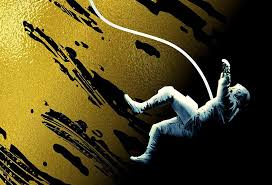

October 1, 2025
Project Hail Mary by Andy Weir is a book that grabs you by the heart and the brain, refusing to let go. If you’ve just finished it, you know it’s more than a sci-fi novel—it’s a rollercoaster of science, suspense, and soul-deep friendship that leaves you both wrecked and uplifted. This is a spoiler-heavy review for those who’ve already taken the journey with Ryland Grace, so if you haven’t finished the book, turn back now! Let’s dive into why this might just be the best book you’ll ever read.
From the opening pages, Weir hooks you with Grace waking up alone, disoriented, and amnesiac in a spaceship he doesn’t recognize. That slow drip of his memory returning had me on edge—frustrated in the best way possible. Every time he pieced together a fragment of his past, I was right there with him, desperate to know more. Why was he alone? What was the mission? The tension of his amnesia isn’t just a plot device; it’s a masterclass in building suspense while making you care deeply about the narrator.
Then there’s Eva Stratt, the iron-willed architect of Project Hail Mary. She’s a force of nature—intimidating, brilliant, and charismatic in a way that commands every scene she’s in. Her relentless drive to save Earth, even when it means making ruthless decisions, reminded me of Jiang from The Poppy War: a woman of unshakable conviction, navigating morally gray waters. Stratt’s support for Grace, even when she’s bending the world to her will, makes her unforgettable. She’s not just a character; she’s a catalyst for the entire story.
But the true heart of Project Hail Mary is the friendship between Grace and Rocky, the spider-like Eridian who becomes his unlikely partner. Rocky is pure joy—his wit, his quirks, his unwavering loyalty. Every mention of his name brought a smile to my face. Their bond, built through music, math, and mutual survival, is one of the most beautiful friendships in fiction. I’ll confess: I put the book down years ago when I thought Rocky had died. My heart couldn’t take it. Picking it back up was the best decision I made. The moment I thought Grace had lost him again in those final chapters? I was a mess. But then—then—to learn Rocky was alive, and Grace’s choice to stay on Erid instead of returning to Earth as a hero? That was poetry. He chose friendship over glory, a decision so selfless and human it left me in tears. It’s one of the most powerful endings I’ve ever read.
Of course, the science in Project Hail Mary is as gripping as the emotions. Weir’s ability to weave real-world physics and chemistry into the story is nothing short of genius. The centrifuge, though? It stressed me out every single time. I kept waiting for it to hit that perfect 9.8g, but the constant risk of it failing had me holding my breath. That tension, paired with the high stakes of saving Earth from solar dimming, kept me glued to the pages.
If I had one quibble, it’s that I desperately wanted a glimpse of Earth after the beetles arrived. Just one chapter showing humanity’s reaction would’ve tied the story together perfectly. But even without it, Weir’s balance of hard science and raw emotional depth is unmatched. The man told one hell of a story.
Project Hail Mary is a brilliant, unforgettable journey of science, sacrifice, and the kind of friendship that transcends species and galaxies. It’s a book that makes you laugh, cry, and think deeply about what it means to be human. If you’ve read it, I’d love to hear your thoughts—what moment hit you the hardest?
What’s next on your reading list after this masterpiece?
Comments